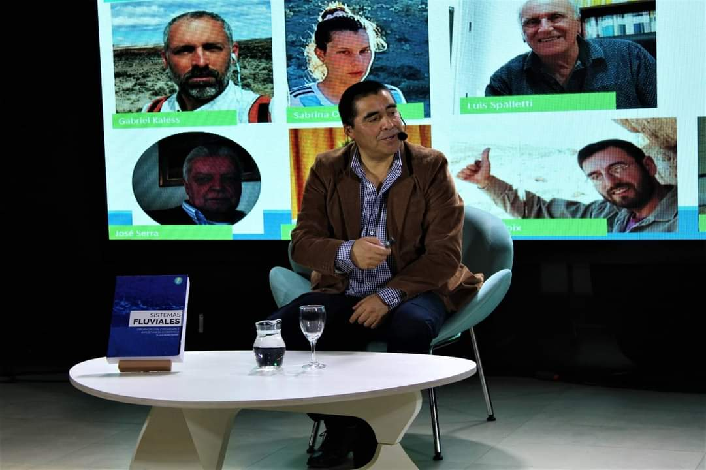
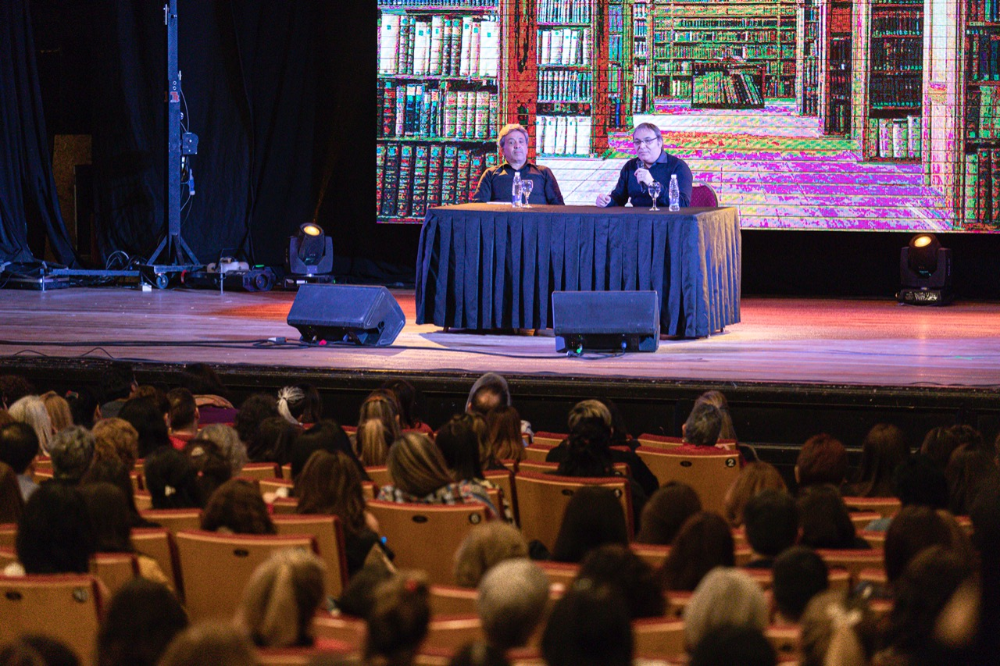
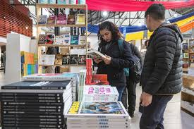
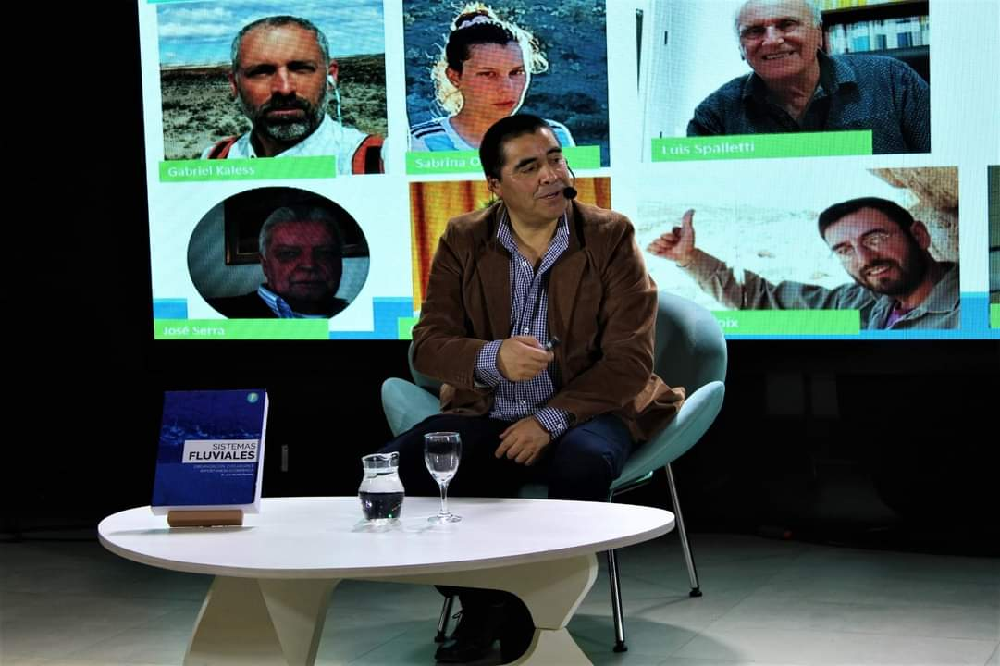
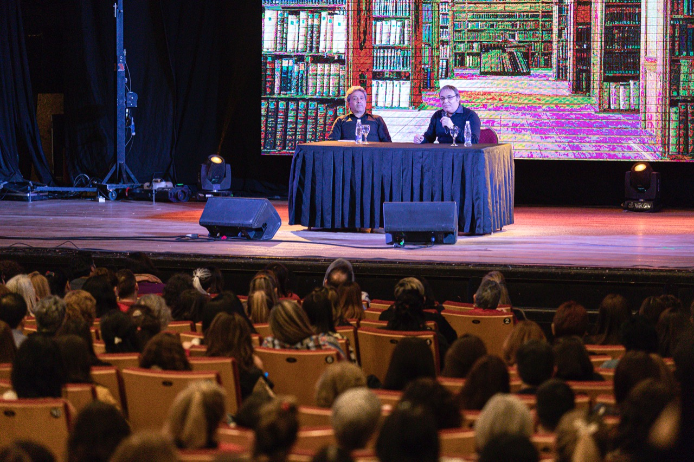
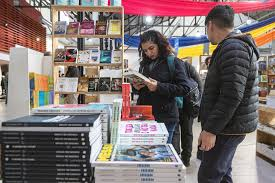

Sobre la Feria
1Información General
La Feria Internacional del Libro de Comodoro Rivadavia, en Chubut, con entrada libre y gratuita, celebra su 11° edición desde el 19 al 28 de Septiembre con la participación de más de 250 editoriales y autores invitados, como Guillermo Martínez, Diego Golombek, Claudia Piñeiro, Dolores Reyes y Daniel López Rosetti
2Actividades
La Feria del Libro contará con 250 editoriales, 50 expositores, más de 40 presentaciones de libro de autores nacionales e internacionales, regionales y locales, más de 20 capacitaciones para docentes, bibliotecarios, y profesionales de la salud, más de 30 actividades para las infancias y adolescentes, estaciones de juegos permanentes, charlas, seminarios, conversatorios, café literario, muestras audiovisuales y proyección de largometrajes.
Galeria


 





Que dicen las personas que nos visitan
Jose Aguilar
Una gran experencia para los amantes de los libros, actividades y charlas. ¡¡Recomiendo totalmente!!
Maria Angeles Mallan
Material de literatura cultural y diversa. Hay muchos stands para leer y comprar libros. Para visitar más de una vez.
Juan Rickemberg
Oportunidad para conocer escritores y aprovechar shows y charlas. Recomiendo no perdersela.
Anahi Torres
Hace 5 años que voy, cada año mejora más. Seguire yendo, súer recomiendo.
Evaristo Fernandez
Buena feria, hay para todos los gustos. Leo novelas, hay gran variedad de autores y editoriales para elegir.
Romina Molina
Viajo desde otra ciudad de la provincia para ir, muy linda experiencia para compartir con amigos o familia.